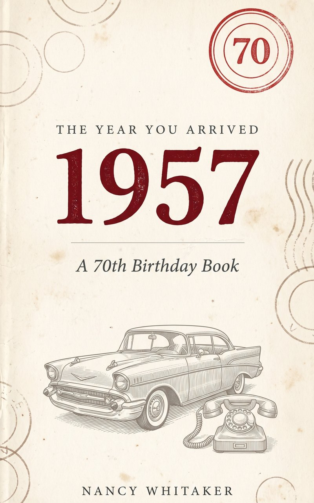

Free Book Guides / The Year You Arrived: 1957

Free guides and tools from The Year You Arrived: 1957 by Nancy Whitaker: a guide to interviewing a parent born in 1957, a month-by-month 1957 timeline sheet, a slide deck on life in 1957 and a printable 1957 trivia quiz.
By Nancy Whitaker. See the book on Amazon
Open all the free files in one Google Drive folder
General history for interest, not financial or medical advice. Prices and figures come from the book and the government records it cites; figures for today are the book's 2026 numbers. Nancy Whitaker is a pen name.